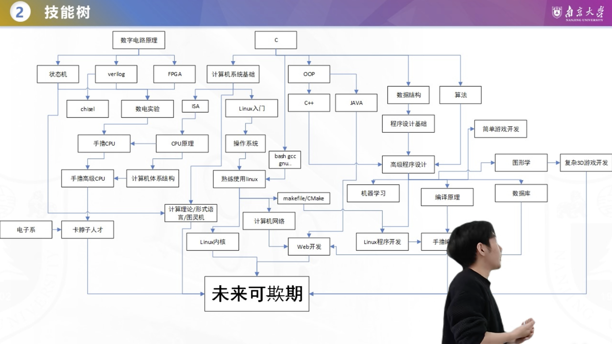
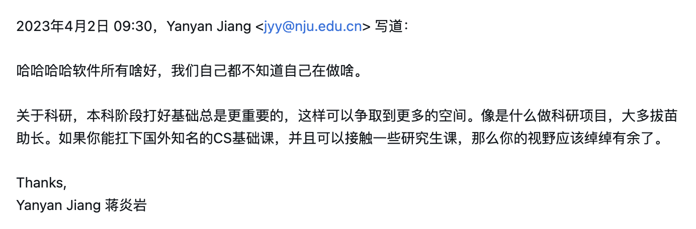
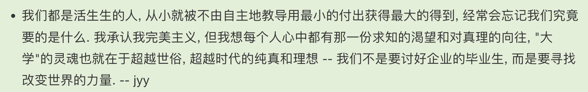

<div class="middle center"> <div style="width: 100%"> # 专业导论（SHNU-CS自救指北） 21级计算机科学与技术 茅文俊 <hr/> 网址：`yrablog.cn/slides/daolun/index.html` 2025.5.13 </div> </div> <!--h--> <div class="middle center"> <div style="width: 100%"> # 自我介绍 </div> </div> <!--v--> ## 自我介绍 * 21级计算机科学与技术（电子信息大类分流） * 毕业去向：复旦大学-Codewisdom智能化软件工程实验室 * 研究方向：LLM4Code（代码翻译、代码缺陷检测...） * 个人<del>废物</del>的本科经历简要（可能不全） * 大一：算竞（OI的延伸），但是颗粒无收；学了点AI、前端... * 大二：各种CS基础课的学习，做了一些国外Lab（MIT6.s081、CS144...）；做了一些奇怪的探索，大致定下了未来规划（决定走软件工程、联系了吴老师、决定考复旦Codewisdom实验室） * 大三上：暑假学习了后端技术栈（走的微服务路线）；开学后到考研前 投大厂日常实习（最后空军） * 大三下：23.11.30 正式开始考研（期间还简单学了一些编译原理、科研内的） * <del>大四：开摆</del> <!--v--> ## 注意事项 * 各种经验的适用因人而异，不同目标人群要有自己的打算 * 目标大致分为：就业、保研、考研、考公考编 * 本文侧重于本科期间如何（<u>**非功利地**</u>）提升CS基础/项目/科研水平 * 个人能力有限，会带有一点主观看法和<del>暴论</del> * 辩证看待 * 内容很多，会语速稍快，不熟悉/没听懂很正常，PPT较详细，有兴趣可以后续翻阅 <!--h--> <div class="middle center"> <div style="width: 100%"> # CS学什么？ </div> </div> <!--v--> ## CS 知识体系（1） * 理论知识 * 算法与数据结构、计算机组成原理、操作系统、计算机网络、数据库 * 数学、编译原理、分布式系统、图形学等理论性课程... * AI相关 * 编程技能 * 高级编程语言（C++、Python、Golang、Rust...） * 软件工程、设计模式 * MySQL、Redis、消息队列等中间件 * <del>翻墙</del>、Git、Github使用、ssh、命令行、Vim...... * 还有很多很多... * 前沿科研领域 <!--v--> ## CS 知识体系（2） * 理论知识 * <green>算法与数据结构、计算机组成原理、操作系统、计算机网络、数据库</green> * 数学、<red>编译原理、分布式系统、图形学等理论性课程...</red> * AI相关 * 编程技能 * <red>高级编程语言（C++、Python、Golang、Rust...）</red> * <green>软件工程、设计模式</green> * <red>MySQL、Redis、消息队列等中间件</red> * <red><del>翻墙</del>、Git、Github使用、ssh、命令行、Vim......</red> * 还有很多很多... * <red>前沿科研领域</red> <!--v--> ## 自学——在SHNU提升的最好路径 * 残酷的现实：跟着学校认真上课，你并不能真正提升能力 * 我周围的大部分: <br>高中思维——被动的接受知识→持续到大三下/大四→跟风考研/就业 * 21级我们班考研上岸率（6/33） * CS岗就业无互联网中大厂（大部分都是走导员的推荐就业公司） * 特指计算机就业（开发岗、算法岗） * 大部分人依然缺乏基本的CS素养（编程能力、工具使用、信息检索能力...） <br> * 破除困境——完成自我定位、规划 + 自学努力 * 清楚自己想要什么？ * 借鉴相似经历的经验分享贴 * 坚持 <!--h--> <div class="middle center"> <div style="width: 100%"> # 如何学好计算机？「思想篇」 </div> </div> <!--v--> ## 视野（1） * 你可能会有这样的疑问❓ * 我想提升，但我该学些什么？听什么课？ * 那么多方向，我该走哪一个？我不知道对哪个感兴趣 * 大模型好像很火，要不要尝试走AI？ * ... * 刚接触CS，没有疑问才不正常 <br><br> 1. 培养大局观，广泛（简单）了解各方向是做什么的 * 计算的本质（算法、数据结构）、计算机的执行原理（计组）、高级语言如何执行（编译原理）、计算机如何管理那么多软硬件资源（操作系统）、多个分布运行的计算机如何协同工作？（分布式系统）... * 推荐[【计算机科学速成课】- Crash Course Computer Science](https://www.bilibili.com/video/BV1EW411u7th/?vd_source=dd461d8e4b0456c6cfc59ef1ba986207) * 利用好大模型🤖 <!--v--> ## 视野（2） 2. 多尝试 * 经验，而非与生俱来 * 大学四年有着无数零成本的尝试机会 * 各种未知/可能有兴趣的方向都尝试学一下，造个demo/轮子 3. 培养taste，技术迭代很快，判断学什么是有价值的 4. 站在巨人的肩膀上 * 计算机最大的特点 —— 开源、包容 * 网络上有无数现成的项目、经验分享 * 多逛逛知乎、牛客、力扣等社区，开拓视野 <!--v--> ## 能力的培养（1） * 抛弃高中思维<br> 上(<del>水</del>)学校课→完成课后作业→期末高分/高绩点→无敌...吗❓ * 绩点与各类竞赛 会异化 个人的 CS 能力 * 你所追求的，对能力真的有提升吗？ <br><br> * 重视能力的培养 * 写高质量代码：造轮子、做高质量的国外Lab * 会做题 != 能力强（当然通过期末考试还是有必要的） <!--v--> ## 能力的培养（2） * 残酷的现实 * <del>有些学校课程实际上毫无营养，能水就水</del> * <del>学校倡导的大创，对大部分人来说只是PPT大赛，毫无收获</del> * ACM / ICPC 可以训练代码/算法能力，但在SHNU不要all in算竞 * 网安 CTF... * 读论文、复现论文 * 完成高质量的国外开源课程与实验——[CS自学指南-csdiy.wiki](https://csdiy.wiki/) * Github 找项目、读源码... * 国内各种活动，例如：字节青训营、Datawhale、一生一芯等... <!--v--> ## 努力与自驱 * 自学没有 DDL，全凭自律与规划 * 想要提升必然要跳出舒适区，遇到困难与痛苦会是常事 * <red>学会自驱</red> * 清楚自己想要什么，驱动自己努力争取 * 摒弃【接受灌输】的惰性思维 → 自驱主动 * 驱动自己做规划、写代码、实践、搜集资料 * 如果有不会或遇到困难？驱动自己找到合适的外部资源、破局 * ... <!--v--> ## 信息检索能力 * 遇到问题 —— 直接找人问 ❌，STFW & RTFM ✅ * 如何搜索？[CS自学指南——信息检索](https://csdiy.wiki/%E5%BF%85%E5%AD%A6%E5%B7%A5%E5%85%B7/%E4%BF%A1%E6%81%AF%E6%A3%80%E7%B4%A2/?h=%E4%BF%A1%E6%81%AF%E6%A3%80%E7%B4%A2) * 不同场景不同检索方案： * 编程技术相关：LLM、搜索、CSDN、文档、StackOverflow... * 具体项目相关：Github 的 issue、搜索、项目文档... * 经验方法问题：知乎、B站、博客园、微信公众号... * QQ群、问老师学长学姐、Github... * [提问的智慧](https://github.com/ryanhanwu/How-To-Ask-Questions-The-Smart-Way/blob/main/README-zh_CN.md) * <del>翻墙</del> > 日积月累，你会具备：扎实的理论基础、强大的代码实践能力以及信息检索能力 <!--h--> <div class="middle center"> <div style="width: 100%"> # 如何学好计算机？「实践篇」 </div> </div> <!--v--> ## Missing Semester — 必学工具 * 大学课堂不会教，但却是对于优秀CSer无比重要的工具🛠️ * 很多同学即便毕业了也不太会用 * 命令行、Git、Vim、SSH、Github、Markdown、<del>翻墙🪜</del>...... <br><br> * [MIT-Missing-Semester](https://csdiy.wiki/%E7%BC%96%E7%A8%8B%E5%85%A5%E9%97%A8/MIT-Missing-Semester/#_1) * 清华--[酒井科协 & 算协联合暑培 2024](https://summer24.net9.org/)（除了基础工具，还包含了很多方向的攻略） * 浙大——[朋辈辅学课程「实用技能拾遗」](https://slides.tonycrane.cc/PracticalSkillsTutorial/)（更偏向基础工具的使用与介绍） <br><br> * 看文档直接上手，有问题可以倍速听一下课 * 在实践中熟练，不需要做笔记，上手会用更重要 * 在后续做项目、Lab过程中会不断用到 <!--v--> ## 几种现成的路线📝 * [CS自学指南 — 一个仅供参考的CS学习规划](https://csdiy.wiki/CS%E5%AD%A6%E4%B9%A0%E8%A7%84%E5%88%92/) * [好书推荐](https://csdiy.wiki/%E5%A5%BD%E4%B9%A6%E6%8E%A8%E8%8D%90/) * [UC Berkeley EECS Course Map](https://hkn.eecs.berkeley.edu/courseguides) * 每门课可以找平替 * [南大版本路线图](img/nju_roadmap.png)【[给南大计科新生的本科通关攻略（课程篇）](https://www.bilibili.com/video/BV1kN411P7sd/?vd_source=dd461d8e4b0456c6cfc59ef1ba986207)】 * [计算机技能树/路线图—HexUp](https://www.bilibili.com/video/BV1gL4y187Wg?vd_source=dd461d8e4b0456c6cfc59ef1ba986207) * [蒋炎岩老师的阅读列表](https://jyywiki.cn/Reading_List.md) * 英语阅读能力也很重要🔠 * 读得多了自然就快了 * 可以大模型辅助 * 选择合适的，结合自身情况、未来目标进行调整，<red>不要照搬！</red> * 更多路线（AI、游戏开发...）→ 网上搜（Github、知乎、B站、[Datawhale](https://www.datawhale.cn/home)等知名团队公众号），记得鉴别答主背景！ <!--v--> ## 可能有的疑问 * 学校里还有课，要学的东西很多学的完吗？ * 至少数学基础 + 编程语言 + 四大件 + 某一方向的一门课 / 技术栈 时间完全充足 * <del>水课能水就水</del>，自学扎实了，期末只需两天看下PPT足矣 * 尝试和老师沟通 * 太难了学不会怎么办？ * 可能缺少了某一前置修炼（前置课、某种能力、某些工具...） * 和同学一起讨论💬 * 你在提升📈 * 「中间提问环节🤔」 * ... <!--h--> <div class="middle center"> <div style="width: 100%"> # 具体课程 <hr/> （简要介绍 ➕ 含国内外课程推荐） </div> </div> <!--v--> ## 注意事项 * 国外课程质量基本甩国内大部分课程十条街 * 主要体现在课程“作业” * 需要具备一定的英语阅读能力，熟能生巧（但现在有大模型辅助） * 国外课程注重实践，一定要保质保量地完成Lab！ * 初次上手配环境一定会遇到问题 * 研究报错、自己尝试解决+搜索→配环境能力upupup↑ * 跟着视频、文档配 * 提问——[提问的智慧](https://github.com/ryanhanwu/How-To-Ask-Questions-The-Smart-Way/blob/main/README-zh_CN.md) * 不要面向 Solution 写 Lab * 每个项目未来都能写入简历的“项目经历” * 国内课程也有值得学习的 * 许多几百集、几百小时的机构课，不要浪费时间听！ <!--v--> ## 程序语言（1） * Coding 将贯穿CS生涯始终 * 与计算机沟通的桥梁🌉 * C语言——第一门必学——接近底层，便于理解计算机系统 * 需求为导向，具体语言实际并不重要，至少要会用一门 Modern Language * C++ —— OOP，底层开发、算竞、系统/游戏开发等，进阶难 * Java —— OOP，生态完善，后端、安卓开发等，岗位需求多 * Golang —— 上手容易，高性能，适合云计算、后端微服务、分布式系统开发，近年来发展迅速（字节、B站...） * Python —— 简单强大，数据分析、人工智能、Web开发 * JavaScript —— 前端开发必备，支持全栈开发（Node.js），Web开发核心语言 * ... <!--v--> ## 程序语言（2） 国外课程推荐： * [CS61A](https://csdiy.wiki/%E7%BC%96%E7%A8%8B%E5%85%A5%E9%97%A8/Python/CS61A/) —— 运用 Python 解决实际问题，作业很有意思，有些主题会偏难（找开源的年份版本） * [CS50](https://csdiy.wiki/%E7%BC%96%E7%A8%8B%E5%85%A5%E9%97%A8/C/CS50/) —— 很受欢迎，质量高难度温和，全开源 * [CS自学指南-csdiy.wiki](https://csdiy.wiki/)的“编程入门栏目” 国内课程推荐： * [CPL-NJU魏恒峰老师](https://www.bilibili.com/video/BV1SWtQexEEo?vd_source=dd461d8e4b0456c6cfc59ef1ba986207) * 其[知识库](https://njusecourse.feishu.cn/wiki/space/7407448410942521345?ccm_open_type=lark_wiki_spaceLink&open_tab_from=wiki_home)也是一份值得学习的资料 * 可以向老师申请OJ使用 任何砖头的语言类书籍——强烈不推荐完整阅读——读完就忘🤦♂️ * 可以当字典📖（但感觉不如LLM😂） <!--v--> ## 算法与数据结构 * 408之一，也是面试笔试会考察的基本素养，很重要❗️ * 基础算法、基本数据结构、数学、图论、动态规划DP、高级... 如果你想参加算竞（ACM/ICPC、蓝桥杯）💻： * [蓝桥杯经验分享PPT-茅文俊](https://yrablog.cn/slides/lanqiaobei) * [蓝桥杯竞赛入门指南.pdf-茅文俊](file/蓝桥杯竞赛入门指南.pdf) 非算竞的训练： * [代码随想录](https://www.programmercarl.com/)➕[力扣LeetCode](https://leetcode.cn/)——刷题训练——找工作面试必备 * [Hello算法](https://www.hello-algo.com/)——基础算法介绍，图文代码并茂，很生动 * [2025算法设计与分析-NJU徐经纬老师](https://www.bilibili.com/video/BV1KAAqe7EeH/?vd_source=dd461d8e4b0456c6cfc59ef1ba986207)（南大本科二年级课程） * [课程主页](https://njudeepengine.github.io/algorithms/) * 没听过，但是老师另一门课质量很高，所以应该不错 <!--v--> ## 计算机组成原理 / 计算机体系结构（1） * 理解计算机是如何运作的 * 数据如何表示与运算 * 外存、内存与缓存... * CPU的组成，指令如何被CPU执行 * 外设如何与系统交互 * ... * 我们学校教的相当浅😭！！ * 408的硬骨头 * 对于想走硬件开发/System/体系结构方向的同学，很重要 * 对于想走软件开发的同学，重要性有所下降 <!--v--> ## 计算机组成原理 / 计算机体系结构（2） 学习方案参考：[交大CXS的方案](https://survivesjtu.gitbook.io/survivesjtumanual/fu-lu/ben-ke-sheng-zhuan-ye-jie-shao-todo/cs-zi-jiu-zhi-bei) 国外课程推荐： * [Nand2Tetris](https://csdiy.wiki/%E4%BD%93%E7%B3%BB%E7%BB%93%E6%9E%84/N2T/) * [CMU15445 / CS:APP(深入理解计算机系统)](https://csdiy.wiki/%E8%AE%A1%E7%AE%97%E6%9C%BA%E7%B3%BB%E7%BB%9F%E5%9F%BA%E7%A1%80/CSAPP/) * 很全面，包含了计组、计网、OS等一系列知识 * 中文版讲解——[九曲阑干的中文讲解](https://www.bilibili.com/video/BV1cD4y1D7uR/?vd_source=dd461d8e4b0456c6cfc59ef1ba986207) * 进阶（推荐给想研究System的同学） * [CS61C](https://csdiy.wiki/%E4%BD%93%E7%B3%BB%E7%BB%93%E6%9E%84/CS61C/) 国内课程推荐： * [计算机系统导论ICS-NJU王慧妍老师](https://www.bilibili.com/video/BV11BpFe4EmM/?vd_source=dd461d8e4b0456c6cfc59ef1ba986207)——当年并没有开源课程的录播😭 * 著名的[南大PA](https://nju-projectn.github.io/ics-pa-gitbook/ics2024/)——很难，但一定会有大量收获——校外只能自测 <!--v--> ## 操作系统（1） * 理解你每天在电脑中使用的一切💡 * 理解命令行的背后 * 每次鼠标🖱️点击会发生什么？ * 那么多进程是如何被创建、协调运行的 * 游戏🎮外挂是怎么实现的？ * 电脑中那么多文件📃是如何组织的... * ... * 软硬件的桥梁，我认为是最重要且最有意思的一门 * 觉醒体内的“编程力量” * B站大部分课质量都极低；我校教材即便选用了大黑书，也依然... <!--v--> ## 操作系统（2） 国外课程推荐： * [MIT6.s081](https://csdiy.wiki/%E6%93%8D%E4%BD%9C%E7%B3%BB%E7%BB%9F/MIT6.S081/) * 教授是世界顶尖黑客Robert Morris，蠕虫病毒之父 * 小型但全面的教学操作系统——xV6——实验基于xV6，实现各种机制与特性 * 网上也有丰富的补充资源 * 进阶——分布式系统——[MIT6.824](https://csdiy.wiki/%E5%B9%B6%E8%A1%8C%E4%B8%8E%E5%88%86%E5%B8%83%E5%BC%8F%E7%B3%BB%E7%BB%9F/MIT6.824/) <!--v--> ## 操作系统（3） 国内课程推荐： * [操作系统：设计与实现——NJU蒋炎岩](https://jyywiki.cn/OS/2025/) B站有[录播](https://space.bilibili.com/202224425/lists/4823953) * 与时俱进，每年更新，国内最顶级的高质量课程❗️❗️（今年的正好在每周更新） * “程序就是状态机”，有趣的视角 * 不开放OJ，但可以本地测试自学 * 我最爱的[绿导师](https://space.bilibili.com/202224425)，打开我计算机世界的启蒙老师 * 阅读蒋炎岩老师的[知乎](https://www.zhihu.com/people/jiang-yan-yan-75/posts)回答与文章，也能涨很多姿势~ * 前置：南大ICS or 体系结构基础（但现在有LLM或许还好？） * 常看常新，能学到的或许不止OS... * 对真理与知识的渴望，去寻找改变世界的力量 * “计算机的世界里没有魔法” <!--v--> ## 操作系统（4） 书籍推荐 * [《OSTEP》Operating Systems: Three Easy Pieces](https://pages.cs.wisc.edu/~remzi/OSTEP/) * 中文版：[《操作系统导论》](https://book.douban.com/subject/33463930/)，蓝书 * 英文版（开源书籍）（也是蒋炎岩老师的教材） * 读起来较为轻松，质量很高 * [《操作系统：原理与实现》](https://ipads.se.sjtu.edu.cn/ospi/) * 国产，银杏书，部分开源（支持正版） * 交大知名System实验室-IPADS的作品 * 内容前沿，代码丰富，有配套实验 * 会有点难 <!--v--> ## 计算机网络（1） * 人与人需要沟通，机器也是 * 点开一个网址背后发生的故事... * 如何沟通？五层/七层夹心汉堡 * 从应用层（e.g.网页)到物理层（e.g.光纤、同轴电缆） * 每一层沟通的约定——协议 * 从局域网交流到互联网大家庭 * 路由器、以太网、DNS、IP、MAC地址... <!--v--> ## 计算机网络（2） 国外课程推荐： * [CS144](https://csdiy.wiki/%E8%AE%A1%E7%AE%97%E6%9C%BA%E7%BD%91%E7%BB%9C/CS144/) * 主推 CS144 的实验Lab，使用 C++ 搭建整个 TCP/IP 协议栈 * 2024年以后较新的详细入门/通关指南:<br> [Standford CS144 (24 Winter) Computer Network - 可能是年轻人最好的现代 C++ 入门课](https://zhuanlan.zhihu.com/p/20551290958) 国内课程推荐： * [计算机网络：自顶向下-中科大郑烇老师](https://csdiy.wiki/%E8%AE%A1%E7%AE%97%E6%9C%BA%E7%BD%91%E7%BB%9C/topdown_ustc/) * 教材先进，授课由浅入深（但得预习） * [深入浅出计算机网络——湖科大高军老师](https://space.bilibili.com/360996402/lists/533771?type=season) * 图文并茂，动画精美，理解难度很低 * 考研人必备 <!--v--> ## 计算机网络（3） 书籍推荐： * ✅ [计算机网络：自顶向下方法](计算机网络：自顶向下方法) * 从应用层到物理层——自顶向下介绍计算机网络协议 * [计算机网络-谢希仁](https://book.douban.com/subject/35498120/) * 大部分国内高校的教材 * 从物理层到应用层——自底向上 <!--v--> ## 人工智能与大模型 * 新时代已至 * 如果你想未来走 AI/LLM 路线 * 扎实（非刷题式的）数学基础（高数、线代、概率论） * 机器学习基础➕深度学习（吴恩达、李沐、李宏毅、邱锡鹏...） * 对应领域的进一步学习（[NLP](https://www.bilibili.com/video/BV1b34y197PY/?vd_source=dd461d8e4b0456c6cfc59ef1ba986207)、CV、语音识别） * [Datawhale](https://www.datawhale.cn/)路线图 * 利用好大模型 * 推荐：[Qwen](https://chat.qwen.ai)、[ChatGPT](https://chatgpt.com/)、[Gemini](https://aistudio.google.com/prompts/new_chat?hl=zh-cn)、[Grok](https://grok.com/)；AI-IDE：Copilot（教育免费）、Cursor（究极好用，但得另找免费渠道/付费） * [大模型原理与技术-浙江大学毛玉仁老师](https://space.bilibili.com/3546823125895398/lists/4470210?type=season)，教材：[大模型基础](https://github.com/ZJU-LLMs/Foundations-of-LLMs) * 学会如何更好地向大模型提问——Prompt工程 * 善用大模型辅助学习，但不能滥用 <!--v--> ## 软件工程SE（<del>原本的主题</del>） * 初期：个人的手工作坊→成本、复杂需求...→软件危机 * 很难有明确定义，[即便是蒋炎岩老师](https://jyywiki.cn/ISER/2020/slides/1.slides.html#/2/1)... * 软件开发的工程化：质量、成本、效率 * 使得程序员们可以更轻松，高质量地写代码 * “最终理想”：无需人为，即可完成软件开发 * 软件需求、软件开发过程、软件架构设计、高质量编码、软件测试... * Usefulness * 推荐书籍：[《现代软件工程基础》](https://mp.weixin.qq.com/s/uVTFz3qEyYM8gVEmPF7jmw) <br> 如果你对软工科研感兴趣..（AI/LLM 对 SE 产生了巨大冲击） * [一些前沿SE科研方向的介绍](https://mp.weixin.qq.com/s/MjKp9Z4NoXdiblZzgvjdQQ) * 软件供应链（依赖迁移）、软件测试与分析、云原生、LLM4Code... * 推荐书籍：[软件开发大数据分析研究与实践](https://mp.weixin.qq.com/s/zyLpzcN2z6ISa-aHZw0zZA)（Codewisdom 的新书） <!--v--> ## 来自蒋炎岩老师的建议  * 好好扎实CS基础 * <red>适当</red>接触前沿课程（例如AI、SE的[静态分析](https://www.bilibili.com/video/BV1b7411K7P4/?vd_source=dd461d8e4b0456c6cfc59ef1ba986207)、分布式系统...） * 少一点功利心 <!--h--> <div class="middle center"> <div style="width: 100%"> # 人各有志——在SHNU的不同路线 </div> </div> <!--v--> ## 科研向 * 本科期间的（普通）paper 并不重要 * 努力只是科研产出的必要条件，发论文不是一朝一夕的结果 * xx同学本科能发表一篇paper往往是多方面的因素 * 资源、机遇、人脉、个人能力... * 无需焦虑 * 阅读蒋炎岩老师的[科研劝退信](https://jyywiki.cn/Letter.md) 如果你实在想发paper，一些建议： * 先简单了解某领域做些什么 * 联系心仪的本校导师，<u>并明确表明发paper的意愿</u>（记得礼貌） * 学习相关基础课 * 大量阅读、试着复现paper * 请教导师 <!--v--> ## 保研向 * 基本能保底 211（上大） * 想去985，rank最重要（顶9，双非本非rk1完全没机会，即便是rk1...） * 分为强Com（学校话语权大）与弱Com（导师话语权大） * 科研经历、机试比较重要 * 试着去知乎搜相关资料 <!--v--> ## CS岗就业向 * 前端、<u>后端</u>、测试、运维、游戏开发、<del>算法</del>（不必考虑）... * 多刷刷[牛客网](https://www.nowcoder.com/)，平衡信息差，学习面经 * 主动投，不要坐等大四投辅导员扔班群里的... * 算法题很重要——好好刷力扣 * 尽早准备项目——对口方向 * 尽早实习，滚雪球 * 利用好每个暑假、寒假（非升大四的暑假只能投日常） * 升大四的暑假一定要暑期实习！！（很多人不知道） * 中大厂直接转正（相对最简单的渠道） * 充沛的 hc（名额） * 金三银四（大三下三月份就能投暑期实习了） * [🥚的民间就业手册](https://jobs.eggcampus.com/) <!--v--> ## 考研向 * 尽早择校与定好方向 * 建议大三下12月份左右可以着手开始准备 * [26届考研经验分享-茅文俊](https://yrablog.cn/slides/kaoyan/index.html)（有兴趣可以看看） <!--v--> ## 其他向 * 运用好信息检索能力 * 勇敢的人先享受世界 * 礼貌、勇敢、有个人见解 * 大家都很友好 * 一次勇敢的主动，可能会得到改变人生的建议与资源 * 每个人成功都有不可复制的经验，多了解多尝试多自我审视。 <!--h--> <div class="middle center"> <div style="width: 100%"> # 一些 QS </div> </div> <!--v--> ## 一些 QS 1. 哪里找开发型项目做？ * Github上找你感兴趣方向的一些开源项目 * 字节青训营提供的项目 * 逛牛客，看看人家的面经、简历，试着Github里找个类似的 * 试着多读读源码（跨越从0到1的最好方法） * 利用好大模型 * 一些知名博主的付费手把手项目课程（鱼皮、Roseduan等） * 注意价格不要挑上k的 2. 关于大创/挑战杯 * 如果没有竞赛/paper能拿到创新学分→不得不参加 * 一定要参加的话→尽量有paper产出 * 如果只是好好做 ppt→ 完全没有学习价值（非功利角度） <!--h--> <div class="middle center"> <div style="width: 100%"> # 最后的最后 </div> </div> <!--v--> ## 最后的最后 * 享受本科四年 * SHNU计算机课程体系相对来说较为轻松 * 每个人都有很大的可塑性 * 多社交，多运动，身体最重要！ * 如果还有问题，可以联系我，微信号：Yra_1216 <br>  * [CS自学指南——后记](https://csdiy.wiki/%E5%90%8E%E8%AE%B0/)